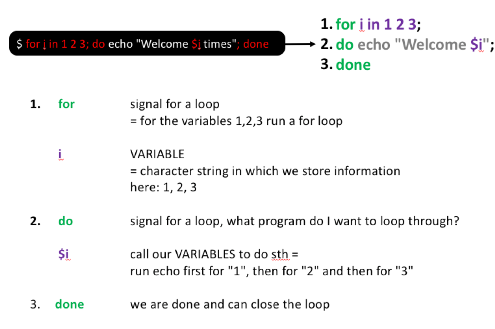

pwdIntroduction to Bash
pwd: Find out where we are
After installing and starting the terminal, let’s orient ourselves by typing our first command, pwd, into the terminal and pressing enter.
pwd prints the location of the current working directory and tells you where exactly you are in the file system. When we login we typically start from what is called our home directory.
Tip: finding the desktop on different user systems
Your home directory will be something like /Users/YourUserName but the path might be slightly different depending on your operating system. Below you find some help to orient yourself better for different terminal interfaces/operating systems:
For MAC users:
- The home directory should be
/Users/YourUserName - To access the current folder in Finder you can try using
open . - Your desktop should be here
/Users/YourUserName/Desktop
For Mobaxterm users:
- Your home directory is
/home/mobaxterm - By default this home directory is in a temporary folder, which gets deleted every time you exit Mobaxterm, To give this folder a persistent home, do the following:
- Settings –> Configuration –> General
- In there set Persistent home directory to a folder of your choice
- To access the file explorer and get used to where you are you can type
explorer.exe . - The path to the desktop would be something like this
/mnt/c/Users/YourUserName/OneDrive/Desktopor/mnt/c/Users/YourUserName/Desktop
For WSL2 users:
- The home directory is
/home/YourUserName - To access the file explorer and get used to where you are you can type
explorer.exe . - The path to the desktop would be something like this
/mnt/c/Users/YourUserName/OneDrive/Desktopor/mnt/c/Users/YourUserName/Desktop
ls: List the contents of a directory
Now that we know where we are, let’s find out what files and folders exist in our home directory. For this you can use the ls command, which allows us to list directory contents:
lsIn my case this returns something like this:
The colors will look different depending on the cli use but in my case I see a list of files (in bold text) and folders (green-highlighted text) in my home directory.
Since this output can easily become over-whelming if we deal with a lot of files and folders, lets look a bit closer into how we can optimize our commands.
The structure of a command
Let´s start with looking at the general structure of a command, which generally consists of three elements, the command itself and some optional options and arguments:
Understanding better what a command looks like, let’s use the ls command together with the option -l. This option results in ls printing the content of a folder in a long listing format.
ls -lAfter running this, we should see our files and folders again but in a long format, which gives more detailed information and structures our output a bit better. I.e. we get precise information about who owns the files, how large the files are, when they were last modified and of course the name:

Getting help
If you want to know what options are available for a command it is always a good idea to check out the manual. In most of the cases you can do this with:
man lsYou exit the manual by pressing q.
In case you want to check what a program does or what options there are, depending on the program there might be different ways to access the manual. These most common ways are:
man lsls --helpls -h
cd: Move around folders
Most of the time you do not want to perform your analyses in the home directory but in a dedicated folder for your project. To get started, we will learn about the cd command that allows us to move around the file system.
The file system is a hierarchical system used to organize files and directories. It is a tree-like structure that starts with a single directory called the root directory, which is denoted by a forward slash (/). All other files are “descendants” of the root. To move from the root into other folders, we can go via the descendants to for example reach the john folder as follows: /users/john.

If we specify the location of a folder or file starting from the root directory, we use what is called an absolute path. If we specify the location relative to our current directory, such as our home directory, we use what is called a relative path.
To start moving around the filesystem, let’s begin by moving relative to our working directory by moving into any of the folders that you saw listed after you have used ls -l. In my case I want to move into the source directory:
cd source/If you use pwd after moving around directories, you should see that a different location is printed to the screen.
We can also move back to our original directory using cd ... This command will move us back one directory (and move us out of the source and back into the home directory).
cd ..We can also move around multiple levels. In the example below, I am going into the source folder, then back to the home directory and then into the docs folder.
cd source/../docsAnother useful way to move around quickly is using the tilde symbol, ~, which can be used as a shortcut to move directly into our home directory from wherever you are on the file system:
cd ~
Exercise
Explore your current location with pwd and ls and move around with cd and try to get used to these three commands. If you are more comfortable, try finding your Deskop based on the tip in the section about pwd.
mkdir: Make new folders
Now that we know how to explore our surroundings, let’s make a new folder in which we start our data analysis. For this we use the mkdir command.
To do this, we will first move into our home directory and then create and move into a new folder called data_analysis as follows:
#go into the home directory
cd ~
#in the home directory make a new folder and name it data_analysis
mkdir data_analysis
#check if new folder was generated correctly
ls
#move into the newly generated folder
cd data_analysis
#check if we correctly changed our location
pwd
Tip: commenting your code
Notice, how in the example below I added the commands to run as well as some explanation about what I did?
Here, I used a specific character # in front of a line of text to denote the beginning of a single-line comment. Anything coming after the character is considered a commend and won’t be executed by the shell.
In the above example I definitely commented the code too much as my comments basically duplicate the code and that should be avoided, however, it is useful to add comments in code to ensure that the purpose of the code is clear to others.
You could, for example, add a comment above functions to describe what the function does and you can also add comments to “tricky” code where it is not immediately obvious what you are trying to do. Basically, you want to add comments to any section where you think that the future you might get confused a month later.
Here you find some examples for python and R but the same logic applies when writing code for bash, some examples for that can be found here.
Tip: Command-line completion
Most command-line interpreters allow to automatically fill in partially typed commands, file paths or file names.
So instead of having to type out data_analysis completely when changing the directory, we can let the interpreter do the work for us.
To do this, start from the home directory (or wherever you ran the mkdir command) and type cd data_ and press the Tab-key on your keyboard. The cli should have auto-completed the folder name automatically.
If there are multiple options, such as data and data_analysis, the cli can not autocomplete the folder name, however, by pressing Tab twice you will see all options to extend the name.
wget: Download data
Next, let’s download our sequencing data into a new data folder. One way to do this is using wget. In the command below we add the option -P to specify into which folder we want to download the data. You an also see how I documented my code here in order to add some more specifics about where the link came from to help future me in case I, for example, need to look for some e-mails about the data later on.
mkdir data
#download data using link provided by the sequencing center on 23.01.2023
wget -P data https://github.com/ndombrowski/cli_workshop/raw/main/data/seq_project.tar.gz
Exercise
- Check with
lsif the file was downloaded correctly - Check the manual if there are extra options that we can use for
lsto check the file size (advanced)
Click me to see an answer
#question 1:
ls -l data/
#question 2:
ls -lh data/seq_project.tar.gztar: Work with tar files
The data we downloaded is provided as a tar file:
- tar is short for Tape Archive, and sometimes referred to as tarball
- The TAR file format is commonly used when storing data
- TAR files are often compressed after being created and then become TGZ files, using the tgz, tar.gz, or gz extension.
We can decompress the data into our data folder as follows:
tar -xvf data/seq_project.tar.gz -C dataThe options we use with the tar command are:
xtells it to extract files from the archivevdisplay verbose information and provide detailed information while creating the tarballfspecify the file nameCtells tar to change directory (so the package content will be unpacked there)
Tip: how to generate a tarball
If you ever want to generate a tarball you can do the following:
tar -cvzf my_tarball.tar.gz folder_to_tarThe options we use are:
ccreate an archive by bundling files and directories togetherzuse gzip compression when generating the tar file
Exercise
- After extracting the tarball use
lsto explore the content of the folder we just extracted. Ensure that you explore the content of potential sub-directories. - Find the path for at least one sequence file that ends on fastq.gz. Hint, to make your life easier, check the
Tip: Command-line completionabove to not have to type every single word.
Click me to see an answer
#question 1:
ls -l data/seq_project
#question 2:
ls -l data/seq_project/barcode001_User1_ITS_1_L001/rm: Remove files and folders
To remove files and folders, we use the rm command. We want to remove the seq_project.tar.gz file since we do not need it anymore once we have extracted the data:
#rm a file
rm data/seq_project.tar.gz
#check if that worked
ls -l dataIf we want to remove a folder, we need to tell rm that we want to remove folders using an option. To do this, we use -r , which allows us to remove directories and their contents recursively.
Important
Unix does not have an undelete command.
This means that if you delete something with rm, it’s gone. Therefore, use rm with care and check what you write twice before pressing enter!
Wildcards
After we have explored the folder with our sequencing data with ls, we have seen that data/seq_project contains 4 folders, 2 folders for two different users who each generated two replicates.
You also might have also noticed that it gets tedious to figure out how many files are in each folder because we would need to run ls on each single folder and view its content individually.
Luckily, the shell provides special characters to rapidly specify groups of filenames or patterns. Wild-cards are characters that can be used as a substitute for any class of characters in a search.
The * wildcard is the wildcard with the broadest meaning of any of the wildcards, it can represent 0 characters, all single characters or any string of characters. It allows us to list all files in the seq_project folder as follows:
ls data/seq_project/*You should have seen before that the sequencing files all end with .fastq.gz we can make this command a bit more specific and at the same time make the output a bit more readable:
ls data/seq_project/*/*.gzIf we wanted to print the absolute and not the relative path, we could do the following (beware that the absolute path will be slightly different depending in you system):
ls /home/User_name/data/seq_project/*/*.gzNow we can easily see for each folder how many files we have.
Exercise
- Use a wildcard to list files for barcode001 only
- Use a wildcard to list files only for user1
Click me to see an answer
#question 1:
ls data/seq_project/barcode001*/*gz
#question 2:
ls data/seq_project/*_User1_*/*gz
Tip: More wildcards
* is not the only wildcard we can use and a full list can be found here.
Different wildcards can be useful in different contexts, not only only when listing files but also finding patterns in files. To make such searches as specific as possible there are different wildcards available. A few examples are:
The [0-9] wildcard = matches any number exactly once and allows us to extract a range of files.
ls data/seq_project/barcode00[0-9]*/*.gzThe [012] wildcard = matches 1 or 2 exactly once and allows us to extract a range of files.
ls data/seq_project/barcode00[12]*/*.gz[A-Z] matches any letter in capitals occurring once
[a-z]* matches any letter in non-capital letters occurring many times
ls data/seq_project/barcode001_User1_ITS_1_[A-Z]001/*.gzI/O redirection to new files
We have seen by now that by default our commands direct print the standard output to the terminal. For example, when we use ls the list of files and folders is printed. However, we can also redirect the standard output to a file by using the > character.
For example, we might want to generate a list with all fastq files and can do this as follows:
ls data/seq_project/*/* > fastq_paths.txtExploring the content of text files
Next, let’s view the content of the list we just generated. Viewing the actual files we work with is often important to ensure the integrity of our data.
head: View the first rows of a file
head can be used to check the first 10 rows of our files:
head fastq_paths.txttail: View the last rows of a file
If you want to check the last 10 rows use tail:
tail fastq_paths.txtless: View the full file
less is a program that let’s you view a file’s contents one screen at a time. This is useful when dealing with a large text file (such as a sequence data file) because it doesn’t load the entire file but accesses it page by page, resulting in fast loading speeds.
less -S fastq_paths.txtOnce opened, less will display the text file one page at a time.
- You can use the arrow Up and Page arrow keys to move through the text file
- To exit less, type
q
Tip: Editing text files
You can also edit the content of a text file and there are different programs available to do this on the command line, the most commonly used tool is nano, which should come with most command line interpreters. You can open any file as follows:
nano fastq_paths.txtOnce the document is open you can edit it however you want and then
- Close the document with
control + X - Type
yto save changes and press enter
wc: Count things
Another useful tool is the wc (= wordcount) command that allows us to count the number of lines in a file. It is an useful tool for sanity checking and here allows us to count how many files we work with:
wc -l fastq_paths.txtAfter running this we see that we work with 8 files.
We could of course easily count this ourselves, however, if we work with hundreds of files its a quick and easy way to get an overview about how much data we work with.
One down-side of this approach is that to be able to count the number of files, we first need to generate a file in which we count the number of files. This (i) can create files we do not actually need and (ii) we use two commands while ideally we want to get the information with a single command.
Pipes
Pipes are a powerful utility to connect multiple commands together. Pipes allow us to feed the standard output of one command, such as ls as input into another command such as wc -l and as such combine multiple commands together.
Therefore, lets use ls to first list all fastq files and then pipe the output from ls into the wc command in order to count with how many files we work with:
ls data/seq_project/*/* | wc -lWe should see again that we work with 8 files, but now we did not have to generate an intermediate text file and have a more condensed command.
Exercise
- Use ls and wc to count how many R1 files we have
- Count how many R2 files we have
- Count how many files were generated for User1?
Click me to see an answer
#question 1: We see 4 files
ls data/seq_project/*/*R1*/*gz | wc -l
#question 2: We see 4 files
ls data/seq_project/*/*R2*/*gz | wc -l
#question 3: We see 4 files
ls data/seq_project/*_User1_*/*gz | wc -l Checking whether we have the same number of R1 and R2 files is a good sanity check, to ensure that we have received all the files from the sequencing center whenever we generate paired sequencing data.
cut: Extract elements from strings
Remember, how we stored a list of sequencing files and the path leading to these files (relative to our home directory in a text file called fastq_paths.txt?
Imagine that we only wanted to have a list of files but not the path, how would we do that?
There are different ways to do this, the simplest one is to use cd and go into the folder with our sequence files and generate a list in there.
However, another way in which we do not have move around (and learn some other concepts) is to use the cut command. cut allows us to separate lines of text into different elements using any kind of delimiter, for example the / that we use in the file path. To ensure that / is seen a separator we use the -d option and with -f4 we tell cut to print the fourth element of each separated field.
head fastq_paths.txt
#extract the file name (i.e. the fourth field when using a / separator)
cut -f4 -d "/" fastq_paths.txt
#do the same as above but this time save the output in a new file
cut -f4 -d "/" fastq_paths.txt > fastq_files.txtWe can also combine this with pipes in order to extract different pieces of information. Let’s assume we start with extracting a folder name, such as barcode002_User1_ITS_9_L001, and from that we want to extract some other information, such as a list with all the barcode IDs. We can easily do this as follows:
cut -f3 -d "/" fastq_paths.txt | cut -f1 -d "_"Nice, we now only have a list with barcodes. However, its not yet ideal since we have duplicated barcodes. If you want to extract this information for some metadata file this is not ideal and we need to get to know two more commands to make this work:
sort and uniq: Create unique lists
sort: sort lines in a file from A-Z and is useful for file organization.uniq: remove or find duplicates . For this command to work you need to provide it with a sorted file
Let’s first ensure that our barcode list is sorted to then extract only the unique information:
cut -f3 -d "/" fastq_paths.txt | cut -f1 -d "_" | sort | uniq
Exercise
- Use cut to print the folder names that lead to the fastq.gz files
- Print the folder names as in 1 but then also extract the User names
- Ensure that when running the code from 2 that we print a unique list of User names
Click me to see an answer
#question 1:
cut -f3 -d "/" fastq_paths.txt
#question 2:
cut -f3 -d "/" fastq_paths.txt | cut -f2 -d "_"
#question 3:
cut -f3 -d "/" fastq_paths.txt | cut -f2 -d "_" | sort | uniqcat: Read and combine files
cat can do different things:
- Create new files
- Display the content of a file
- Concatenate, i.e. combine, several files
To view files we do:
cat fastq_paths.txtTo combine files we do:
#combine files
cat fastq_paths.txt fastq_files.txt > combined_files.txt
#view new file
cat combined_files.txt
Exercise
Fastq.gz files can easily be combined using cat and while this is not strictly necessary in our case, you might need to do this with your sequence files in the future. For example if you sequenced a lot of data and for space reasons the sequencing center send you multiple files for a single sample.
- Using wildcards and cat, combine all R1 fastq.gz files into a single file
- Use ls to judge the file size of the individual R1 files and the combined file to assess whether everything worked correctly
Click me to see an answer
#question 1:
cat data/seq_project/*/*R1.fastq.gz > combined.fastq.gz
#question 2:
ls -lh data/seq_project/*/*R1.fastq.gz
#question 3:
ls -lh combined.fastq.gzIf you compare the numbers from part 2 and 3, you should see that the combined.fastq.gz file is roughly the sum of the individual files.
Exploring the content of compressed fastq files
Exercise
- View the first few rows of any one of the fastq.gz sequence files
- Does this look like a normal sequence file to you?
Click me to see an answer
head data/seq_project/barcode001_User1_ITS_1_L001/Sample-DUMMY1_R1.fastq.gzAfter running this command you will see a lot of random letters and numbers but nothing that looks like a sequence, so what is going on?
gzip: (De)compress files
After downloading and exploring the content of the downloads folder, you have seen that the file we downloaded ends with gz. This indicates that we work with a gzip-compressed file. Gzip is a tool used to (de)-compress the size of files.
In order to view the content of such files, we sometimes need to de-compress them first. We can do this using the gzip command together with the decompress -d option:
gzip -d data/seq_project/barcode001_User1_ITS_1_L001/Sample-DUMMY1_R1.fastq.gz
head data/seq_project/barcode001_User1_ITS_1_L001/Sample-DUMMY1_R1.fastqAfter running this, we finally see a sequence and some other information. Notice that for fastq files we always should see 4 rows with information for each sequence:
Exercise
- After running the gzip command above, make a list of each sequence file with
ls - Use
lswith an option to also view the file size and compare the size of our compressed and uncompressed files.
Click me to see an answer
#question 1:
ls -l data/seq_project/*/*
#question 2:
ls -lh data/seq_project/*/*We see that our file has a file size of about ~25M after compression while the compressed files are around ~5M.
When working with sequencing files the data is usually much large and its best to keep the files compressed to not clutter your computer.
To keep our files small its best to work with the compressed files. If we want to compress a file, we can do this as follows:
gzip data/seq_project/barcode001_User1_ITS_1_L001/Sample-DUMMY1_R1.fastq
ls data/seq_project/*/*zcat: Decompress and print to screen
We have seen that to view the content of a compressed file and make sense of the content we had to first decompress the file. However, sequence files tend to get rather large and we might not want to decompress our files to not clutter our system.
Luckily, there is one useful tool in bash to decompress the file and print the content to the screen called zcat, the original compressed file is kept while doing this. We combine this command with the head command, since do not want to print millions of sequences to the screen but only want to explore the first few rows:
zcat data/seq_project/barcode001_User1_ITS_1_L001/Sample-DUMMY1_R1.fastq.gz | headgrep: Find patterns in data
The grep command is used to search text. It searches the given file for lines containing a match to the given strings or words. Also this command is simple but very useful for sanity checks after file transformations.
Let’s first search for some things in the text files we generated, for example, we might want to only print information for the R1 files:
#grep a pattern, here R1, in fastq_paths.txt
grep "R1" fastq_paths.txtWe see the list of files that match our pattern. If we simply are interested in the number of files that match our pattern, we could add the option -c for counting.
grep -c "R1" fastq_paths.txtWe can also combine this with wildcards, for example, if we look for all samples from User1 we could do the following:
grep "User1_ITS_*_" fastq_paths.txt
Exercise
- Grep for paths containing the pattern “ITS_9” in fastq_paths.txt
- Grep for the pattern “AAGACG” in any of the fastq.gz files
- Count how often “AAGACG” occurs in any in any of the fastq.gz files
Click me to see an answer
#1
grep "ITS_9" fastq_paths.txt
#2
zcat data/seq_project/barcode001_User1_ITS_1_L001/Sample-DUMMY1_R1.fastq.gz | grep "AAGACG"
#3
zcat data/seq_project/barcode001_User1_ITS_1_L001/Sample-DUMMY1_R1.fastq.gz | grep -c "AAGACG"The last two commands can be very useful to check if if the adapters or primers are still part of your sequence.
wc: Count things
Another useful tool is the wc (= wordcount) command that allows us to count the number of lines in a file. It is an easy way to perform sanity checks and in our case allows us to count how many sequences we work with:
zcat data/seq_project/barcode001_User1_ITS_1_L001/Sample-DUMMY1_R2.fastq.gz | wc -lAfter running this we see that we work with 179,384 / 4 sequences. We need to divide the number we see on the screen by 4 since each sequence is represented by 4 lines of information in our fastq file.
Avanced Tip: better counting
We have seen that we need to divide the output of wc by four to get the total number of sequences. We can do this with a calculator but actually, some intermediate bash can also be used to do this for us:
zcat data/seq_project/barcode001_User1_ITS_1_L001/Sample-DUMMY1_R2.fastq.gz | echo $((`wc -l`/4))In the command above we have some new syntax:
- The echo command is used to display messages or print information to the terminal. In our case it will print whatever is going on in this section
$(( `wc -l` / 4)) $((...)): This is an arithmetic expansion in Bash. It allows you to perform arithmetic operations inside the brackets and substitute the result into the command line.- The backticks (``) around wc -l indicate command substitution. This means that the wc -l command is executed, and its output (the number of lines counted) is used in the overall command. Without command substitution (wc -l alone), you would not capture the output; instead, you would only see the literal text “wc -l”. Command substitution allows you to use the actual result of the command.
/4: This is dividing the result obtained from wc -l by 4. Since each sequence in a FASTQ file is represented by four lines (identifier, sequence, separator, and quality scores), dividing the total number of lines by 4 gives the number of sequences.
For-loops
Imagine we want to count the lines not only from one but all files. Could we do something like the code below?
zcat data/seq_project/*/*.gz | wc -lWhen running this, we see that the command prints a single number, 869 944, but not the counts for each file, so something did not work right.
The problem with this command is that it prints the text from all 8 fastq files and only afterwards performs the counting. We basically concatenated all files and then calculated the sum of all 8 files. However, what we want to do is to repeat the same operation over and over again:
- Decompress a first file
- Count the lines in the first file
- Decompress a second file
- Count the lines in the second file
- …
A for loop is a bash programming language statement which allows code to be repeatedly executed. I.e. it allows us to run a command 2, 3, 5 or 100 times.
Let’s start with a simple example but before that let’s introduce a simple command echo. echo is used to print information, such as Hello to the terminal:
echo "Welcome 1 time!"We can use for-loops to print something to the screen not only one, but two, three, four … times as follows:
for i in 1 2 3; do
echo "Welcome ${i} times"
doneAn alternative and more condensed way of writing this that you might encounter in the wild is the following:
for i in 1 2 3; do echo "Welcome ${i} times"; doneHere, you see what this command does step by step:

Let’s try to do the same but for our files by storing the individual files found in data/seq_project/*/*.gz in the variable i and print i to the screen in a for-loop.
for i in data/seq_project/*/*.gz; do
echo "I work with: File ${i}"
donefor i in data/seq_project/*/*.gz; do: This part initializes a loop that iterates over all files matching the patterndata/seq_project/*/*.gz. The variable i is assigned each file in succession.
We can then use these variables stored in i to perform more useful operations, for example for each file, step-by-step, count the number of lines in each file by using some of the tools we have seen before:
for i in data/seq_project/*/*.gz; do
zcat ${i} | wc -l
donezcat ${i} | wc -l: This is the action performed inside the loop. zcat is used to concatenate and display the content of compressed files (*.gz). The | (pipe) symbol redirects this output to wc -l, which counts the number of lines in the uncompressed content.
Exercise
- Use a for loop and count how often grep finds the pattern “TAAGA”
Click me to see an answer
for i in data/seq_project/*/*.gz; do
zcat ${i} | grep -c "TAAGA"
doneSometimes it is useful to not store the full path in i, especially when we want to store the output of our loop in a new file. Luckily, we can use the list of files we stored in fastq_files.txt to rewrite this command a bit and make use of the fact that we can use cat to print something in a text file to the screen:
for i in `cat fastq_files.txt`; do
zcat data/seq_project/*/${i} | wc -l
donefor i in `cat fastq_files.txt`; do: This initiates a loop that iterates over each item in the file fastq_files.txt. The backticks ` are used to execute thecatcommand within the backticks to read the content of the text file and assign its output to the variable i.zcat data/seq_project/*/${i} | wc -l: Like before, this line uncompresses (zcat) and counts (wc) the number of lines in the specified file. However, in this case, the file is determined by the content of fastq_files.txt, which contains a list of file names.
After this modification of the code, we can very easily store the output in a file instead of printing the results to the screen.
#Count the number of lines in each sequencing file
#Store the output in a new folder
mkdir counts
for i in `cat fastq_files.txt`; do
zcat data/seq_project/*/$i | wc -l > counts/${i}.txt
done
ls counts/*txt
head counts/Sample-DUMMY1_R1.fastq.gz.txt
Tip: Avanced: better counting in for loops
Let’s get a bit more advanced to show you some powerful features of bash. For this imagine that you would do this for 100 files. In this case it would be useful to see the file names next to the counts. We can achieve this by using what we have learned in the Better counting tip where we have learned about echo and command substitution.
for i in data/seq_project/*/*.gz; do
echo "$i: $(zcat $i | wc -l)"
done- The echo command is used to display messages or print information to the terminal. In our case it will print whatever is going on here
"$i: $(zcat $i | wc -l)" $(...): These parentheses are used for command substitution. It means that the commandzcat $i | wc -lis executed, and its output (the line count of the uncompressed content) is substituted in that position.- The double quotes (““) perform what is called a string concatenation. It concatenates the filename ($i), a colon (:), a space, and the line count obtained from the command substitution. The entire string is then passed as a single argument to the echo command.
Almost perfect, now we only want to divide this by 4:
for i in data/seq_project/*/*.gz; do
echo "$i: $(( $(zcat $i | wc -l) /4 ))"
doneNotice, how we use both single brackets and double brackets?
$((...))in contrast to$(...)is an arithmetic expansion in Bash. It allows you to perform arithmetic operations and substitute the result into the command line.